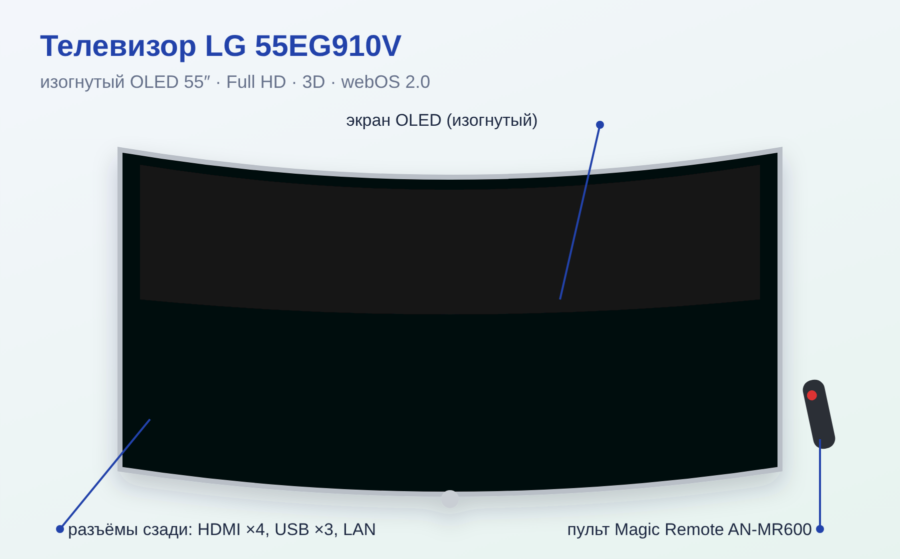
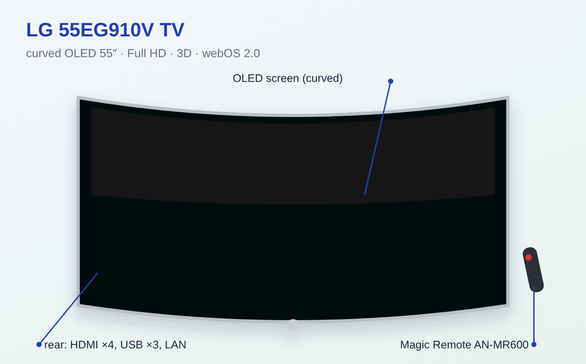
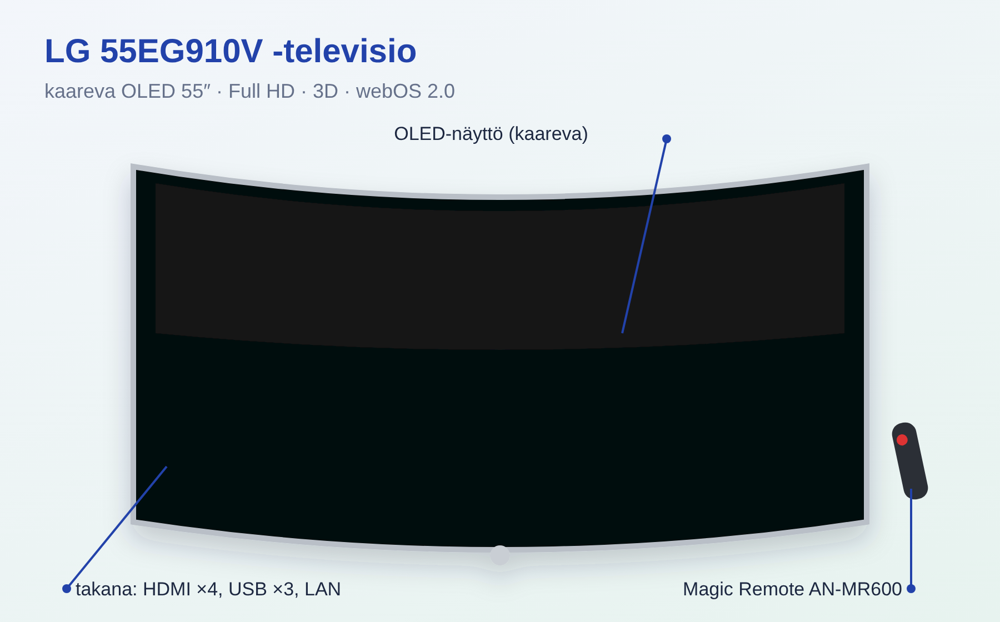

• Изогнутый OLED-телевизор LG 55EG910V, 55″, Full HD 1920×1080, 3D (пассивные очки), Smart TV на webOS 2.0. • Висит на стене в гостиной, напротив кухни. Изготовлен в феврале 2016 (Польша), питание 100–240 В. • Пульт: Magic Remote AN-MR600 (указка с колёсиком).
• Включение — красная кнопка ⏻. • Наводите пульт на экран — появляется курсор, нажатие колёсика = «ОК», прокрутка колёсиком. • Кнопка с домиком — меню приложений (YouTube, Netflix и др.). • Кнопка INPUT (или «Вход» в меню) — выбор источника HDMI 1–4. • Если курсор пропал — потрясите пульт; если не реагирует — заменить 2 батарейки AA. • Повторно связать пульт: нажать и удержать кнопку «Домой» и «Назад» ~5 с, направив на ТВ.
• 4 × HDMI (один с ARC — для саундбара), 3 × USB (один USB 3.0), LAN (интернет кабелем), оптический аудиовыход, антенна/кабель, CI+ слот, компонентный и AV-вход. • Разъёмы на задней панели; толщина штекера HDMI/USB не больше 10×18 мм (наклейка CAUTION).
1. Проверить, включён ли нужный источник (INPUT → HDMI). 2. Выключить ТВ из розетки на 1 минуту и включить. 3. Проверить кабель HDMI и приставку/роутер. 4. Интернет: Настройки → Сеть → проверить подключение (LAN или Wi-Fi).
• Не оставлять надолго неподвижную картинку (меню, логотипы каналов на паузе) — возможен «отпечаток». • Телевизор сам периодически обновляет пиксели после выключения пультом — не выдёргивать из розетки сразу после выключения. • Экран протирать только сухой мягкой тканью, без спирта и средств для стёкол.
• Диагональ 55″ (139 см), изогнутый экран. • Размер без подставки ≈ 122,5 × 71,9 × 4,9 см, вес ≈ 12,8 кг; крепление VESA 300×250. • Звук 2 × 10 Вт. Тюнеры DVB-T/T2/C/S/S2. • Потребление: в среднем ~110 Вт, максимум 320 Вт, в ожидании 0,3 Вт.

• LG 55EG910V curved OLED TV, 55″, Full HD 1920×1080, 3D (passive glasses), Smart TV on webOS 2.0. • Wall-mounted in the living room, opposite the kitchen. Made February 2016 (Poland), power 100–240 V. • Remote: Magic Remote AN-MR600 (pointer with scroll wheel).
• Power — red ⏻ button. • Point the remote at the screen to get a cursor; press the wheel = OK, scroll with the wheel. • Home button — apps menu (YouTube, Netflix etc.). • INPUT button (or Input in the menu) — choose HDMI 1–4. • If the cursor is gone, shake the remote; if it does not respond, replace the 2 AA batteries. • Re-pair: point at the TV and hold Home + Back for ~5 s.
• 4 × HDMI (one with ARC — for a soundbar), 3 × USB (one USB 3.0), LAN, optical audio out, antenna/cable, CI+ slot, component and AV in. • Ports on the back; HDMI/USB plug no thicker than 10×18 mm (CAUTION sticker).
1. Check the source (INPUT → HDMI). 2. Unplug the TV for 1 minute and plug it back in. 3. Check the HDMI cable and the set-top box/router. 4. Internet: Settings → Network → check connection (LAN or Wi-Fi).
• Do not leave a still image for long (menus, paused channel logos) — it can cause image retention. • After switching off with the remote the TV refreshes pixels by itself — do not unplug right away. • Wipe the screen only with a dry soft cloth, no alcohol or glass cleaner.
• 55″ (139 cm), curved screen. • Without stand ≈ 122.5 × 71.9 × 4.9 cm, ≈ 12.8 kg; VESA 300×250. • Sound 2 × 10 W. Tuners DVB-T/T2/C/S/S2. • Power: ~110 W average, 320 W max, 0.3 W standby.

• LG 55EG910V kaareva OLED-televisio, 55″, Full HD 1920×1080, 3D (passiivilasit), Smart TV webOS 2.0. • Seinällä olohuoneessa, keittiötä vastapäätä. Valmistettu helmikuussa 2016 (Puola), 100–240 V. • Kaukosäädin: Magic Remote AN-MR600 (osoitin ja rulla).
• Virta — punainen ⏻-painike. • Osoita ruutua, niin kursori ilmestyy; rullan painallus = OK, vieritä rullalla. • Koti-painike — sovellusvalikko (YouTube, Netflix jne.). • INPUT-painike (tai valikosta Tulo) — valitse HDMI 1–4. • Jos kursori katoaa, ravista säädintä; jos ei toimi, vaihda 2 AA-paristoa. • Uudelleenparitus: osoita televisiota ja pidä Koti + Takaisin ~5 s.
• 4 × HDMI (yksi ARC — soundbarille), 3 × USB (yksi USB 3.0), LAN, optinen äänilähtö, antenni/kaapeli, CI+-paikka, komponentti- ja AV-tulo. • Liitännät takana; HDMI/USB-pistoke enintään 10×18 mm (CAUTION-tarra).
1. Tarkista lähde (INPUT → HDMI). 2. Irrota TV pistorasiasta minuutiksi ja kytke takaisin. 3. Tarkista HDMI-kaapeli ja digiboksi/reititin. 4. Internet: Asetukset → Verkko → tarkista yhteys (LAN tai Wi-Fi).
• Älä jätä pysäytyskuvaa pitkäksi aikaa (valikot, kanavalogot) — kuva voi palaa kiinni. • Kaukosäätimellä sammutettu TV päivittää pikselit itse — älä irrota heti pistorasiasta. • Pyyhi ruutu vain kuivalla pehmeällä liinalla, ei alkoholia eikä lasinpuhdistusainetta.
• 55″ (139 cm), kaareva näyttö. • Ilman jalkaa ≈ 122,5 × 71,9 × 4,9 cm, ≈ 12,8 kg; VESA 300×250. • Ääni 2 × 10 W. Virittimet DVB-T/T2/C/S/S2. • Kulutus: keskimäärin ~110 W, enintään 320 W, valmiustila 0,3 W.